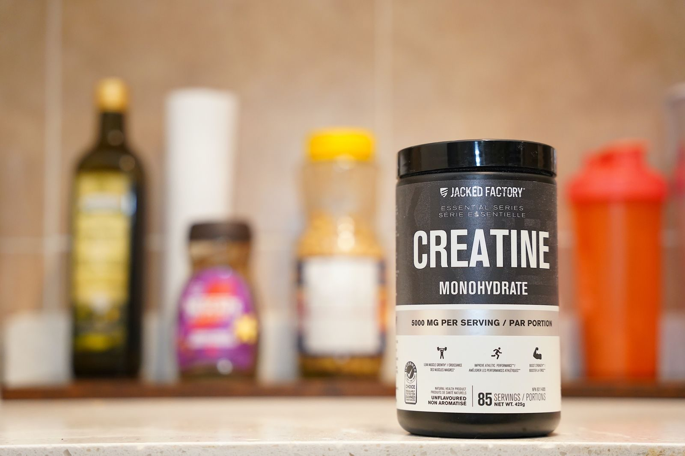

Cikk · Kreatin
Kreatin és erősítés: a sovány tömeg az áttekintésben az edzéshez kötődött
Egy 2026-os összesítés egészséges, 18–30 éves férfiak vizsgálataiból azt írta: zsírmentes és sovány tömeg csak erősítő edzés mellett nőtt érdemben. Az anaerob teljesítmény edzésformától függetlenül is eltért.

Mi a kérdés?
A kreatinról a lap máshol is írt: a rövid, intenzív szakaszokra van adat, a hosszútávfutásra nem. Ez az írás más kérdést néz. Számít-e, hogy a szedés erősítő edzéssel jár-e együtt, ha a testösszetételről és a teljesítményről van szó?
A forrás Gu, Li, Xiao és Zhang áttekintése a Frontiers in Nutritionban, 2026. április 8-án. Egészséges, 18 és 30 év közötti férfiak randomizált vizsgálatait gyűjtötték össze. Nem magyar kezelési útmutató, és nem mindenkire szóló adag.
Mit néztek?
Az adatbázisokat 2025. október 1-jéig nézték át. Harminchét vizsgálat felelt meg a feltételeknek. Előre elkülönítették az erősítő edzést attól a helyzettől, amikor nem volt erősítés. Összevetették a zsírmentes tömeget, a sovány tömeget, a Wingate-teszt csúcs- és átlagteljesítményét, a felugrást és az egyismétléses maximumot. Azt is megnézték, módosítja-e az eredményt az edzés típusa vagy a szedés hossza. Ez utóbbi bontást a szerzők maguk is óvatosan kezelik.
Áttekintés 37 randomizált vizsgálat, egészséges férfiak, 18–30 év. A protokollt előre rögzítették a PROSPERO-ban (CRD420261283973).
Mit találtak?
Az összesítésben így jött ki Erősítő edzés mellett a zsírmentes tömeg 3,39 kilogrammal, a sovány tömeg 2,70 kilogrammal volt nagyobb. Erősítés nélkül ugyanezek a tömegkülönbségek nem voltak szignifikánsak. A szám az összesített különbség, nem egy ember várható gyarapodása.
Az összesítésben így jött ki A Wingate csúcsteljesítmény 71,27 watttal, az átlagteljesítmény 39,69 watttal volt magasabb, és ez mindkét edzéskörnyezetben megjelent. Arra nem találtak bizonyítékot, hogy az edzés típusa ezt a teljesítménykülönbséget módosította volna.
Óvatosan A felugrás összesítve 2,70 centiméterrel volt nagyobb, de a vizsgálatok nagyon szórnak (I² = 89 százalék). A szerzők szerint ezt a becslést óvatosan kell olvasni.
A szedés hosszára bontott elemzésből számot nem emelünk ki. A szerzők szerint kevés vizsgálat és nagy szórás miatt az is csak óvatosan értelmezhető.
A következtetésük: az anaerob teljesítmény az edzéskörnyezettől függetlenül nőtt, a testösszetétel viszont csak akkor, ha mellette erősítés is volt. Azt írják, a sovány tömeghez a kreatint erősítéssel együtt érdemes gondolni, az anaerob teljesítményre pedig más edzésforma mellett is lehet különbség. Ez az ő mondatuk erről a mintáról, nem recept és nem adag.
Mit nem állítunk
Nem mondunk grammot, és nem mondjuk, hogy egy doboz felirata mindenkinél teljesül. A 3,39 kilogramm nem ígéret egyetlen embernek.
Az áttekintés fiatal, egészséges férfiakról szól. Nőkről, idősebbekről és betegekről ebből a közleményből nem vonunk le következtetést.
Nem állítjuk, hogy a kreatin helyettesíti az edzést. A tömegre vonatkozó eredmény éppen ahhoz kötődött, hogy volt-e erősítés.
A veseműködés, a laborban mért kreatinin és a serdülők kérdése ebben a közleményben nem szerepel. Ahol a lap máshol kreatinról ír, az a másik cikk tárgya.
Források
- Gu J, Li Y, Xiao J, Zhang Y. Creatine supplementation in young men under resistance versus non-resistance training: a systematic review and meta-analysis of strength, performance, and lean mass. Frontiers in Nutrition. 2026. április 8. https://doi.org/10.3389/fnut.2026.1800546 · teljes szöveg
- A vizsgálat előzetes regisztrációja: PROSPERO CRD420261283973. https://www.crd.york.ac.uk/prospero/display_record.php?RecordID=1283973